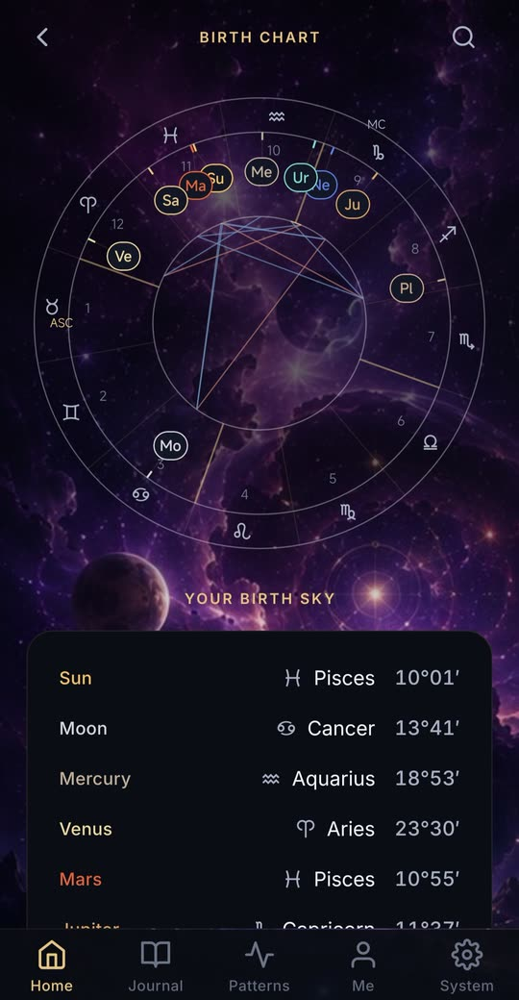
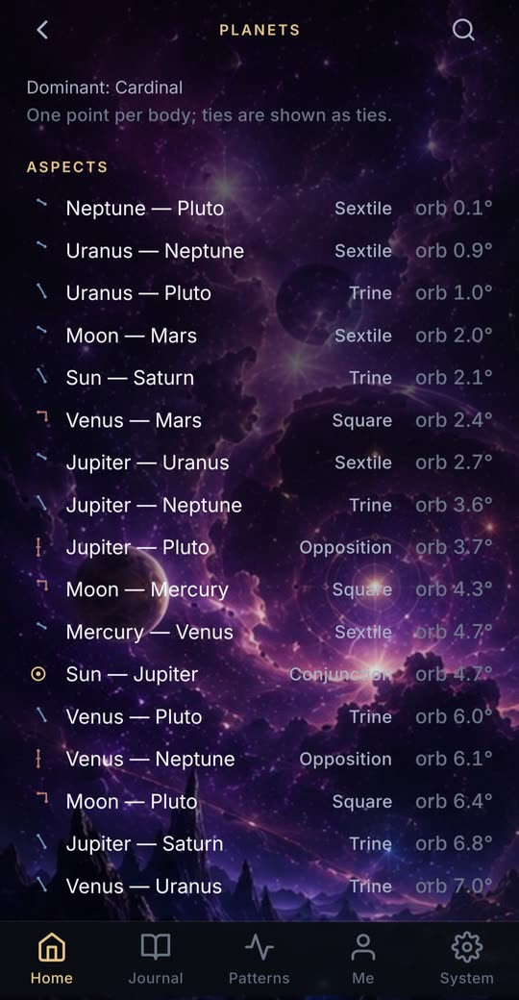

免費星盤查詢：你的行星落在哪個星座
本命盤（又稱出生星盤）是你出生那一分鐘、在出生地點的天空地圖。My Cosmic Code 在你的手機上依真實天文資料計算，畫出完整的星盤，而不只告訴你一個星座。
本命盤計算器
輸入出生日期，若知道也可填出生時間與城市，就能看到太陽、月亮與各行星當時的位置：每顆星的星座與度數，畫在黃道輪上。
想在行星進入或離開你的星座、開始逆行，或新月、滿月落在你的星座時收到通知嗎？這些通知只在 App 裡提供，請從 Google Play 安裝。


本命盤會顯示什麼
- 你的太陽星座、月亮星座與上升星座：占星學會放在一起解讀的三個星座。
- 每顆行星所在的星座與宮位，並標示逆行行星。
- 行星之間的相位，以及它們的容許度。
- 完整本命盤盤面上的上升點與天頂。
- 宇宙報告（Cosmic Report）把你的星盤和數字整合在一起，收錄全部 144 種太陽與上升星座組合的解說。
需要準備什麼
你的出生日期、出生時間與出生地點。上升星座和宮位取決於精確的時間與地點：上升點大約一天就會走完十二個星座，約每兩小時換一個星座。
隱私優先的設計
App 內：沒有廣告、沒有分析工具、沒有追蹤器、不需要帳號。你的出生資料、星盤和日記只儲存在你的裝置上，你可以在應用程式內匯出或刪除。
常見問題
怎麼查我的上升星座？
輸入你的出生日期、精確的出生時間與出生地點。上升星座是那一刻從東方地平線升起的星座，所以除了日期，還需要時間與地點。
太陽星座和本命盤有什麼不同？
太陽星座只是一個落點：太陽當時所在的位置。本命盤則標出每顆行星、月亮、上升點與十二宮，並顯示它們之間的相位。
是免費的嗎？
應用程式可免費下載，而且大部分功能一直免費：你的宇宙密碼、出生星盤中的行星、今日、接下來一週的月亮、每日一牌、解夢詞典和你的日記。透過 Google Play 的 Pro 和 Max 可開啟其餘功能。沒有廣告。